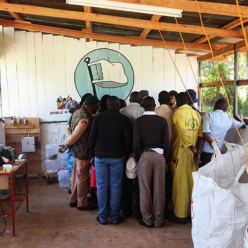
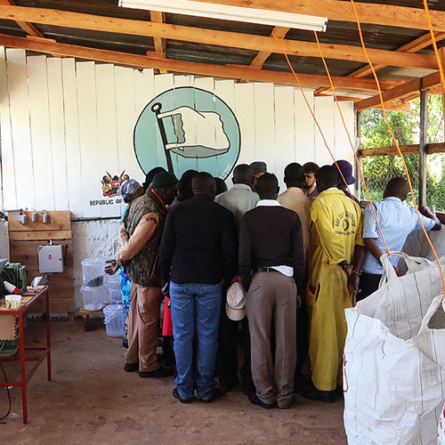
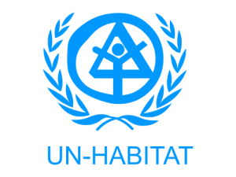

UN-HABITAT invited Precious Plastic to create a plastic recycling workspace in Kisii, Kenya. The project tries to tackle two critical problems in the area: plastic pollution and youth unemployment (60% of the population). Using Precious Plastic technologies and modus operandi we wanted to offer a small scale solution that, if successful, could be replicated across the region and country. The project spun across 12 months with a total of three visits from the Precious Plastic team. Beyond this time the team of locals will be left to run the workspace on their own.
During the first visit in Kenya Dave, Mattia & Emile laid the foundations of the project. In the two weeks they had available they transformed an old chicken shed into a plastic recycling workspace and trained locals on how to use the machines and recycle plastic into products. Two intense weeks of construction, building, melting, training, laughter and joy.

 

Six months after our first visit Dave, Mattia & Kat went back to the workspace to monitor on the development and offer further training to help to run the space. After a somehow tough start, we spent the week to do workshops, team building, create a structure for the team and helped improving the outcome products.


As expected we've learned tons of useful things while working in rural Africa. Slashing our assumptions we've gathered crucial insights on working with people of very different cultures, sourcing materials locally, working with African officials, finding decent motors, building machines, structuring the team & lots more.

The UN-HABITAT offered Precious Plastic 20.000€ to plan, execute and monitor the project over the course of 12 months. This is how we spent the money:
- 6000€ on machines, parts & tools
- 5000€ on salaries
- 2000€ expenses on the ground
- 2000€ video production and post production
- 5000€ profit to be reinvested in Precious Plastic
Big part of creating these pilots is to learn what partners fit best Precious Plastic projects so people around the world can learn what works best for their projects.
Un-habitat
Working with such a big organization is both exciting and daunting. Be prepared for lots of paper work and bureaucracy which naturally translate into slower outcomes. Partners like the UN also come with a great number of regulations and procedures. On a bright side they have the expertise on the ground and the budget to execute projects of this size 😄
Kisii County
Working with Kisii County was indeed a challenge. African bureaucrats, coming from a completely different culture, have different working methodologies, expectations and requirements. The result is a slow, difficult and inefficient process if compared to our expectations. On a positive note they tend to be very polite, welcomy and committed.
Setting up a workspace in rural Africa was a terrific experience. Lots of learning, continuous pivoting, great people and the best mango juices in the world. Definitely not an easy task though. If you're about to start a project in Africa be ready for a number of cultural, social, environmental and technological challenges. The most crucial aspects to keep in mind when working in Africa are:
1. Centuries of colonialism and globalisation left the continent mostly poor and uneducated. This can influence your work in a number of ways.
2. Electricity is not a given. Even though we were very lucky with only a few blackouts throughout our experience, absence of electricity is very common.
3. Chinese crap has inundated the continent, basically everything that can't make it to Europe or US goes on to Africa. Sad. This can make it difficult to source good quality materials, tools, parts, motors and components.
4. The cultural difference is huge. From food to work and everything in between is completely different from everything we've ever experienced before. Keep that in mind when working in Africa.
5. Internet is scarce-ish even though mobile internet was rather good.
6. Punctuality is a rare asset. Be ready for late starts, in the order of hours 😄
7. Tribes play a huge role, if not in the whole of Africa, in Kenya. These social dynamics are difficult to understand and comprehend for outsiders but influence your work on a daily basis.

If you want to get in touch with the people running the workspace in Kisii, Kenya you can follow the links below. Make sure to show your love for their hard work and involve them in great projects.
Pilots are unique opportunities to test Precious Plastic ideas, technologies and processes on the ground. We collaborate with different institutions, partners and organisations to create Precious Plastic workspaces around the world.
We do pilots for two main reasons: research and testing. Working in different countries, with people of completely different cultures, realities, needs and drives help us understand the problem in a more informed and practical way. This field research is then used to develop Precious Plastic in more meaningful, accessible and applicable manners enabling ever more people around the world to work with plastic waste. While on the ground we also stress test our ideas, machines and systems to try and make successful plastic recycling workspaces in different parts of the world.
We like to make the mistakes, fail, pivot and find a better solutions. So others like yourself don’t need to make the same mistakes again. Trying to make plastic recycling easier and more affordable for others around the world.